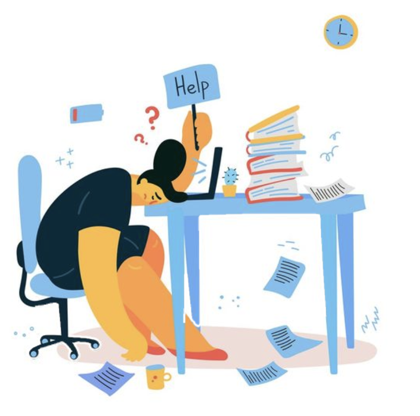

مرات نفيق والنشاط مش موجود... كأنني تعبانة بنفسيتي وبجسمي. مش عارفة ليش.
إذا كنتِ حاسّة بالتعب المستمر – حتى بدون سبب واضح – فإنتي مش لحالك. الشعور هذا حقيقي ومفهوم. 💗
التعب النفسي والعاطفي ممكن يظهر كتعب جسدي. الضغط المستمر، قلة النوم، والتردد الدائم بخلونا منهكات.
✨ لو حسّيتي تعب، اعرفي إن جسمك ونفسيتك عم بيحكوا معاكي. اسمعيهم بلطف.
🎥 فيديو قصير (بالإنجليزية) بيوضح أهم الأسباب اللي ممكن تخلينا نحس بتعب مستمر – جسدياً ونفسياً.
حسيتي تعب مستمر من غير سبب واضح؟
كل شعور له معنى. تعبك محسوس ومهم ومش مجرد كسل. احترمي احساسك. 🌸
رجوع إلى الدماغ 🧠